News Archives: Nov 1, 2003 - Jan 6, 2017
33 stories listed.
 |
Annual Holiday Gift Drive (until December 19th, 2011)
- Dec. 9, 2011
For the seventh year in a row, MCB Building Operation ... Tags: 2011, Holiday Gift Drive, charitable work |
|
Paul Doty 1920-2011
- Dec. 6, 2011
Paul Doty, Mallinckrodt Professor of Biochemistry, Emeritus, Director Emeritus, Center ... Tags: 2011, Paul Doty Lecture |
|
| 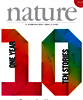 |
Retroviral RNA Snaps into Shape!
- Dec. 1, 2011
Retroviruses, like all viruses, rely on host protein machinery to ... Tags: 2011, Nature, Victoria D'Souza, publication |
|
New Research Center Aims to Map Brain's Nerve Circuits in Search for Causes of Mental Illness
- Nov. 22, 2011
Scientists in the Department of Molecular and Cellular Biology (MCB ... Tags: 2011, Catherine Dulac, Conte Center at Harvard, Jeff Lichtman, Takao Hensch |
|
| 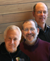 |
Brain Team Wins NIH Award
- Nov. 21, 2011
A special federal grant for bold, outside-of-the-box biomedical proposals has ... Tags: 2011, Jeff Lichtman, Joshua Sanes, Markus Meister, awards |
| 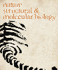 |
Special Delivery for RNA Silencing
- Nov. 21, 2011
A powerful way to treat genetic diseases and combat viral ... Tags: 2011, Craig Hunter, Nature Structural & Molecular Biology, publication |
|
Steven Chu Presents 2011 Bloch Lecture
- Nov. 21, 2011
This year’s Bloch Lecture will be given bySteven Chu ... Tags: 2011, Bloch Lecture, lecture |
|
 |
Annual Thanksgiving Food Drive (Thursday, Nov. 10 until Thursday, Nov. 17, 2011)
- Nov. 7, 2011
For the sixth year, MCB Building Operations is organizing the ... Tags: 2011, Food Drive, charitable work |
| 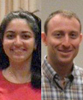 |
MCB Awards 2011 Peralta and Meselson Prizes to Ghazaleh Ashrafi and Jeremiah Cohen
- Oct. 13, 2011
Ghazaleh Ashrafi and Jeremiah Cohen received prizes given annually for ... Tags: 2011, Ernest Peralta Fund Award, Meselson Prize, Naoshige Uchida, awards |
| 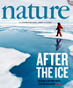 |
Smell Your Friends from Your Enemies!
- Oct. 5, 2011
Unlike humans, most animals rely heavily on scents to collect ... Tags: 2011, Catherine Dulac, Nature, Venkatesh Murthy, publication |
|
D'Souza and Leschziner Promoted to Associate Professor
- Sept. 27, 2011
"The MCB department unanimously supported the promotion of Victoria D ... Tags: 2011, Andres Leschziner, Victoria D'Souza |
|
|
Hopi Hoekstra's Molecular Approach to Evolution
- Sept. 22, 2011
The three heads on the wall of Hopi Hoekstra’s ... Tags: 2011, Hopi Hoekstra, profile |
|
|
MCB Faculty Florian Engert and Sharad Ramanathan Receive 2011 NIH Director's Pioneer Awards
- Sept. 20, 2011
Two MCB faculty members, Engert and Sharad Ramanathan, are recipients ... Tags: 2011, Florian Engert, NIH Directors Pioneer Award, Sharad Ramanathan, awards |
|
| 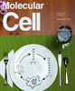 |
How to Shuck a Specialized Chaperone
- Sept. 9, 2011
Eukaryotic cells target a large fraction of proteins synthesized in ... Tags: 2011, Molecular Cell, Vlad Denic, publication |
| 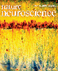 |
Sculpting Sound Space in the Developing Brain
- Aug. 12, 2011
Brain functions, such as language, are shaped by experience during ... Tags: 2011, Nature Neuroscience, Takao Hensch, publication |
|
Sticking Together Makes Life Sweeter
- Aug. 9, 2011
Gene expression is controlled by a class of proteins called ... Tags: 2011, Andrew Murray, PLoS Biology, publication |
|
 |
Erin O'Shea's Dog Zambo Wins World Championship
- July 12, 2011
Erin O'Shea is a world leader in studies of ... Tags: 2011, Erin O'Shea |
| 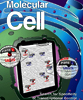 |
CisCode, Trans Effect, Transcription Specificity
- June 27, 2011
Gene expression is controlled by a class of proteins called ... Tags: 2011, Erin O'Shea, Molecular Cell, publication |
|
Sharad Ramanathan Named a 2011 Pew Scholar
- June 15, 2011
Sharad Ramanathan, Assistant Professor of Molecular and Cellular Biology and ... Tags: 2011, Pew Scholar in Biomedical Sciences, Sharad Ramanathan, awards |
|
| 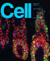 |
How do Pluripotent Cells Choose a Fate?
- June 10, 2011
A fundamental question in developmental biology is how multi-potent cells ... Tags: 2011, Cell, Sharad Ramanathan, publication |
|
MCB's Rachelle Gaudet Receives Tenure
- May 25, 2011
The Department of Molecular and Cellular Biology is pleased to ... Tags: 2011, Rachelle Gaudet, profile |
|
|
Briana Burton Named Milton E. Cassel Scholar, Top Award from Rita Allen Foundation
- May 25, 2011
Briana Burton, Assistant Professor of Molecular and Cellular Biology (MCB ... Tags: 2011, Briana Burton, Milton E. Cassel Scholar, awards |
|
| 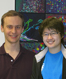 |
Two MCB Graduate Students Receive Awards
- May 25, 2011
In spring 2011, two graduate students in the Molecular and ... Tags: 2011, Hutchinson Cancer Research Center's Harold M. Weintraub Graduate Student Award, National Science Foundation Graduate Research Fellowship, awards |
|
Four Undergraduates Receive Five Awards in 2011
- May 25, 2011
Four undergraduates – Yunsoo Kim in Craig Hunter's lab; Siyuan ... Tags: 2011, awards, undergraduate education |
|
|
Robert Tjian to Deliver 2011 John T. Edsall Lecture
- May 2, 2011
Robert Tjian was an undergraduate at the University of California ... Tags: 2011, John T. Edsall Lecture, lecture |
|
| 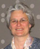 |
Dulac Awarded Perl/UNC Neuroscience Prize
- April 27, 2011
The University of North Carolina at Chapel Hill has named ... Tags: 2011, Catherine Dulac, Perl/UNC Neuroscience Prize, awards |
|
April 16th Symposium Explores the Richest Biological Reservoir on Earth: The Microbial World
- April 4, 2011
Microbes (including bacteria, viruses, fungi, and protists) are ubiquitous on ... Tags: 2011, Microbial Sciences Symposium, symposium |
|
| 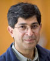 |
John Kuriyan to Deliver 2011 Paul Doty Lecture
- March 28, 2011
ProfessorJohn Kuriyanwill present the 2011 Paul Doty Lecture on March ... Tags: 2011, Paul Doty Lecture, lecture |
|
Cori Bargmann to Give Prather Lectures March 29, 30, 31
- March 14, 2011
This year's Prather Lectures will be given byCori Bargmann ... Tags: 2011, Prather Lectures, lecture |
|
| 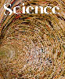 |
Bacterial Circadian Clocks Tightly Linked to Metabolism
- Jan. 25, 2011
Circadian clocks are biological oscillators that help organisms keep track ... Tags: 2011, Erin O'Shea, Science, publication |
| 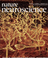 |
The Brain Unplugged
- Jan. 19, 2011
At least since the 1950s studies of sensory systems have ... Tags: 2011, Markus Meister, Naoshige Uchida, Nature Neuroscience, publication |
| 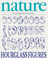 |
How to Infer Cellular Response to a Small Stimulus from Behavioral Variability before Stimulus in Bacteria
- Jan. 14, 2011
Over the last decade, there have been a string of ... Tags: 2011, Nature, Philippe Cluzel, publication |
|
Changing the Culture of Science Education at Research Universities
- Jan. 14, 2011
Professors at large research universities have two important responsibilities: generating ... Tags: 2011, Richard Losick, Science, publication |